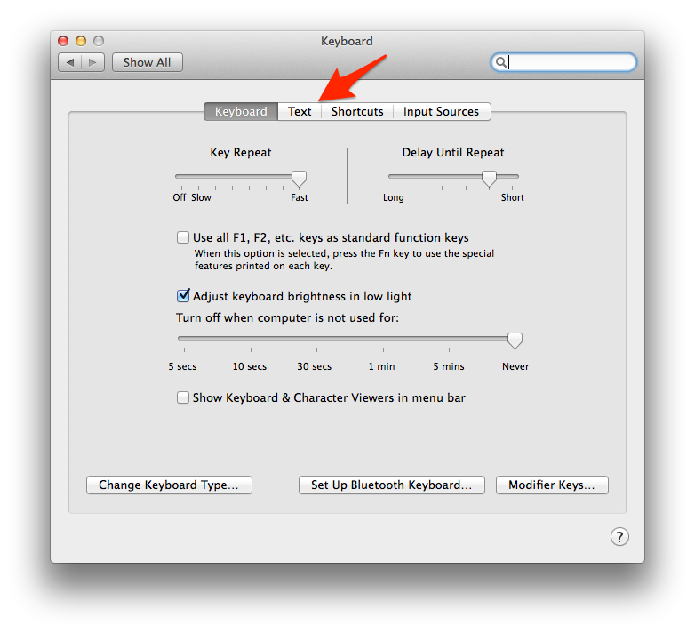
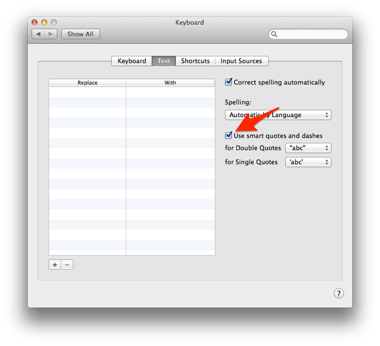
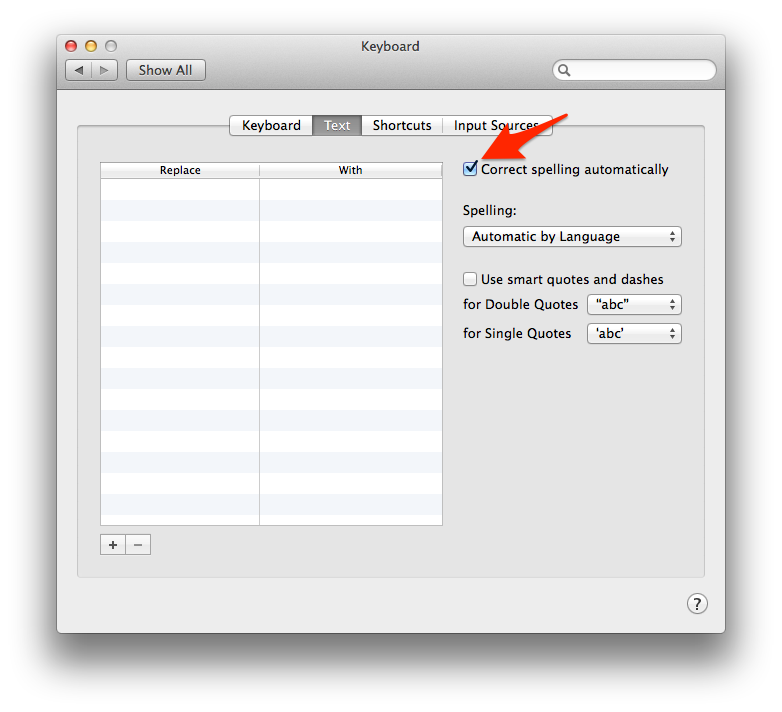

When writing some routes with Camel’s Java DSL I came across this exception:
1
Caused by: java.lang.IllegalStateException: No method invocation could be created, no matching method could be found on: null
After a lot of tracing I figured out that it was related to me calling the .bean(...) method with a class that was actually just an interface. What was happening was that Camel wants to instantiate this class, usually using Spring, but cannot do that if it isn’t a concrete implementation.
This proved to be a real problem because I had an interface that had two implementations. One of these implementations is used for debugging and the other is used for production. I didn’t want to have to manually select which one I was using in my code because that’s Spring’s job so I came up with a way to do it.
For the complete background here’s what my interface looks like:
This converts a Protobuf to our “wire” format. That format could be the native protobuf binary format or JSON. I implement this empty interface in two classes called ProtobufToBinary and ProtobufToJson and I want to use the JSON one only for debugging.
To be clear doing this always fails with the exception I listed above:
A route that always fails
1
from(SOME_URI).bean(ProtobufToWire.class);
To fix this I added this to my Java-based Spring config:
Now because, I believe, that Camel’s bean(...) method doesn’t look up the beans with Spring this still fails. What I needed to where I am defining my routes is this:
Finally, how to get Camel to instantiate the right type
What I’m doing here is getting Spring to autowire an instance of that interface into a private variable and then asking it for its real concrete type. Part of me says that I shouldn’t have to do this but this is what works for me.
Did this help you out? Do you have a better way to do it? Post in the comments!
I just got my Yubikey Neo with U2F support and I felt like the documentation on how to get it up and running was a bit hard to find. If you are having trouble getting started with U2F these few quick steps will help you get through it.
Step 0: Download and install the Yubikey Neo Manager application. This is NOT the Yubikey Personalization Tool! The Yubikey Personalization Tool does not support enabling U2F yet.
Step 1: Open the Yubikey Neo Manager with your Yubikey installed and click Change connection mode [OTP]
Step 2: On the Change connection mode check the U2F box to change the setting from OTP to U2F and click OK.
The application will now prompt you to remove your device. You can remove it and plug it back in again. Close the Yubikey Neo Manager application.
I did find an example of how to use Guice with Apache Camel but it wasn’t commented well and involved doing a lot of extra work that didn’t provide me any benefits. So below I’ve listed the things that you’ll need to do to get Guice and Camel working together. What we are doing here is setting up Guice as a JNDI provider and automatically loading a Guice CamelModule via JNDI.
Step 1: Create a jndi.properties file in your project’s resources directory. The java.naming.factory.initial line tells JNDI to use Guice, the org.guiceyfruit.modules tells the javax.naming.InitialContext class which module it should run at startup.
jndi.properties
12345
# Guice JNDI providerjava.naming.factory.initial=org.apache.camel.guice.jndi.GuiceInitialContextFactory# list of guice modules to boot up (space separated)org.guiceyfruit.modules=com.timmattison.CamelGuiceApplicationModule
Step 2: Create a class with a static main method that will run your Camel routes. Because JNDI and Guice do most of the work there isn’t much to do here.
com.timmattison.CamelApplication
12345678910111213141516171819
packagecom.timmattison;importjavax.naming.InitialContext;/** * Created by timmattison on 10/27/14. */publicclassCamelApplication{publicstaticvoidmain(String[]args)throwsException{// Create the Camel context with GuiceInitialContextcontext=newInitialContext();// Loop foreverwhile(true){// Sleep so we don't kill the CPUThread.sleep(10000);}}}
Step 3: Create a class that extends RouteBuilder that implements a route (or multiple routes).
I moved the constants out to separate classes so they’d be easier to refer to in other places if necessary.
com.timmattison.CamelConstants
12345678
packagecom.timmattison;/** * Created by timmattison on 10/27/14. */publicclassCamelConstants{publicstaticfinalStringDIRECT_TEST_ROUTE_1="direct:testRoute1";}
com.timmattison.HttpConstants
12345678910
packagecom.timmattison;/** * Created by timmattison on 10/27/14. */publicclassHttpConstants{publicstaticfinalStringTEST_URL_1="/test1";publicstaticfinalStringTEST_URL_2="/test2";publicstaticfinalStringTEST_URL_3="/test3";}
com.timmattison.RestRoutes
1234567891011121314151617181920
packagecom.timmattison;importorg.apache.camel.builder.RouteBuilder;importorg.apache.camel.model.rest.RestBindingMode;/** * Created by timmattison on 10/27/14. */publicclassRestRoutesextendsRouteBuilder{publicstaticfinalStringRESTLET="restlet";publicstaticfinalintPORT=8000;@Overridepublicvoidconfigure()throwsException{restConfiguration().bindingMode(RestBindingMode.auto).component(RESTLET).port(PORT);rest(HttpConstants.TEST_URL_1).get().to(CamelConstants.DIRECT_TEST_ROUTE_1);}}
Step 4: Create the interfaces and the implementations that we’re going to use in our route.
Here we’re creating four things:
The interface that we’re implementing that handles the route (SayHello1) that gets injected with Guice via JNDI. This interface doesn’t do anything other than give Guice a way to reference implementations of it.
An implementation of that interface (BasicSayHello1). Also, BasicSayHello1 is going to have a dependency that we want injected with Guice to make the example more complete.
The interface for the class that we want Guice to inject (MessageHandler)
The implementation that gets injected (BasicMessageHandler)
com.timmattison.jndibeans.interfaces.SayHello1
123456789
packagecom.timmattison.jndibeans.interfaces;importorg.apache.camel.Processor;/** * Created by timmattison on 10/27/14. */publicinterfaceSayHello1extendsProcessor{}
com.timmattison.jndibeans.BasicSayHello1
123456789101112131415161718192021222324
packagecom.timmattison.jndibeans;importcom.timmattison.jndibeans.interfaces.SayHello1;importcom.timmattison.nonjndibeans.interfaces.MessageHandler;importorg.apache.camel.Exchange;importjavax.inject.Inject;/** * Created by timmattison on 10/27/14. */publicclassBasicSayHello1implementsSayHello1{privatefinalMessageHandlermessageHandler;@InjectpublicBasicSayHello1(MessageHandlermessageHandler){this.messageHandler=messageHandler;}@Overridepublicvoidprocess(Exchangeexchange)throwsException{exchange.getOut().setBody(messageHandler.getMessage(getClass().getName()));}}
packagecom.timmattison.nonjndibeans.interfaces;/** * Created by timmattison on 10/28/14. */publicinterfaceMessageHandler{publicStringgetMessage(Stringinput);}
com.timmattison.nonjndibeans.BasicMessageHandler
12345678910111213
packagecom.timmattison.nonjndibeans;importcom.timmattison.nonjndibeans.interfaces.MessageHandler;/** * Created by timmattison on 10/28/14. */publicclassBasicMessageHandlerimplementsMessageHandler{@OverridepublicStringgetMessage(Stringinput){return"Hello "+input+"!";}}
Step 5: Create the direct route that handles the route from RestRoutes
com.timmattison.DirectTestRoutes
1234567891011121314151617
packagecom.timmattison;importcom.timmattison.jndibeans.interfaces.SayHello1;importcom.timmattison.jndibeans.interfaces.SayHello2;importcom.timmattison.jndibeans.interfaces.SayHello3;importorg.apache.camel.builder.RouteBuilder;/** * Created by timmattison on 10/27/14. */publicclassDirectTestRoutesextendsRouteBuilder{@Overridepublicvoidconfigure()throwsException{from(CamelConstants.DIRECT_TEST_ROUTE_1).beanRef(SayHello1.class.getName());}}
Step 6: Create a Guice module that extends CamelModuleWithMatchingRoutes. I bound my SayHello1 interface to BasicSayHello1, MessageHandler to BasicMessageHandler, and included my RestRoutes and DirectTestRoutes.
com.timmattison.CamelGuiceApplicationModule
123456789101112131415161718192021222324
packagecom.timmattison;importcom.timmattison.jndibeans.BasicSayHello1;importcom.timmattison.jndibeans.interfaces.SayHello1;importcom.timmattison.nonjndibeans.BasicMessageHandler;importcom.timmattison.nonjndibeans.interfaces.MessageHandler;importorg.apache.camel.guice.CamelModuleWithMatchingRoutes;/** * Created by timmattison on 10/27/14. */publicclassCamelGuiceApplicationModuleextendsCamelModuleWithMatchingRoutes{@Overrideprotectedvoidconfigure(){super.configure();bind(SayHello1.class).to(BasicSayHello1.class);bind(MessageHandler.class).to(BasicMessageHandler.class);bind(RestRoutes.class);bind(DirectTestRoutes.class);}}
Now if you don’t want Guice to handle any external JNDI bindings then you’re done. You can run this application as-is and it will serve up the RESTlet route. You can test it by using cURL like this:
If you want to have Guice handle JNDI bindings you can easily add those into your module. For example, if I wanted to be able to get an instance of SayHello1 by using the JNDI name sayHello1FromGuice I could add this to my module:
This tells JNDI that our Guice provider will handle any JNDI requests for this name. Luckily, we didn’t have to create any of these manually because Guice automatically creates JNDI bindings for anything that you’ve called bind on using its class name.
For example there is an automatic JNDI binding for com.timmattison.jndibeans.interfaces.SayHello1 because we called bind(SayHello1.class).to(BasicSayHello1.class). If we ever want an instance of whatever Guice has bound to this we can ask JNDI for it using SayHello1.class.getName().
You’ll notice that in our DirectTestRoutes class we routed the direct test route to beanRef with the parameter SayHello1.class.getName(). That’s all you need to do as you add more classes to your Camel routes.
A few months ago I wanted to get some data out of WeatherGoose II Climate Monitor so I could convert it into JSON and consume it in another application. I hacked something together and converted their format to JSON in a few hours as a proof-of-concept and the code sat for a few months.
A co-worker recently asked me if they could hook up to my script with a browser to try to do some visualization. I didn’t want to install Apache or nginx as a front end and I didn’t want to modify the script to run its own webserver so I came up with a one-liner that uses netcat to get the output of my script into their browser.
But wait! netcat has an option for this. However, on the Raspberry Pi it is not available and I didn’t want to start downloading new versions.
Here it is:
1
SCRIPT="./weathergoose.py 192.168.1.99" && PORT="8080" && while true; do $SCRIPT | nc -l -p $PORT; done
You’ll need to set SCRIPT to the script you want to run (including any parameters it needs) and PORT to the port you want to listen on.
Be careful! This is not a real webserver. This just spits your scripts output back to the browser. Anything the browser sends to the script is ignored.
Also, the script runs first and pipes its output to netcat. This happens before netcat accepts a connection and can cause some confusion. Here’s a concrete example.
Assume I wrote a script that just returns the time. If I use the above snippet and start it at 5:00 PM but I hit it with my web browser at 5:15 PM the time that I get back will be 5:00 PM. The next time I hit it it will be 5:15 PM. The easiest way to think about it is that you get the data from when the script started or at the time of the previous request, whichever is later.
I hope to come up with a fix for this issue but I haven’t had the time yet. Do you have a fix? Does this work for you? Post in the comments below.
Want to understand how Bitcoin transactions work? Follow my next couple of posts for step-by-step explanations of what is going on behind the scenes.
NOTE: These posts are going to be extremely technical.
In this post I’m going to explain the very first Bitcoin transaction in excruciating detail. The first Bitcoin transaction is not the first block ever mined. The first Bitcoin transaction occurred in block 170 when the first Bitcoins were transferred from one address to another.
Each Bitcoin block contains transactions. The first transaction is called the coinbase and is a transaction that actually mines/creates new Bitcoins. All transactions after that are some kind of balance transfer from a set of addresses to another set of addresses.
Version number is the little endian representation of the version number of this transaction. Future transactions in a different format could have a different version number so they can be processed in new ways.
Input counter tells us that we should expect 1 input.
Input script #0 contains all the bytes in our input script.
Output coutner tells us that we should expect 2 outputs.
Output scripts #0 and #1 contain all the bytes in the two output scripts in this transaction. These outputs show where the Bitcoins are going. In this case they’re being sent to two different addresses.
Previous transaction hash tells us where to find the transaction that this input is working on. This transaction hash refers to the coinbase in block 9 which mined 50 BTC.
Previous output index tells us which output script in the transaction we should apply this input script to. In this transaction in block 9 there was only one output.
Length tells us the number of bytes that are coming up in our input script. In this case it is 0x48 or 72 bytes.
Now we’re at the actual input script. This input script consists of a single operation (VIRTUAL_OP_PUSH) which pushes a 71 byte value onto the stack. That 71 byte value is a signature that signs the previous output and the new output so that we make sure know that the person unlocking the coins is the same person spending the coins.
The really interesting part is how we do the transaction validation. That requires a lot of explanation… as if this wasn’t long and complicated enough already.
Let’s look at the output script from block 9:
VIRTUAL_OP_PUSH: 0x41
Bytes to push: 0411db93e1dcdb8a016b49840f8c53bc1eb68a382e97b1482ecad7b148a6909a5cb2e0eaddfb84ccf9744464f82e160bfa9b8b64f9d4c03f999b8643f656b412a3
OP_CHECKSIG: 0xac
This script pushes a value onto the stack (which happens to be a public key) and the calls OP_CHECKSIG. This is called a pay-to-pubkey transaction. Simply it says that anyone who can create a signed transaction with a certain public key can spend this output.
OP_CHECKSIG does four things:
Pops a value off of the stack and calls it the public key
Pops a value off of the stack and calls it the signature
Grabs data from the previous transaction and the current transaction and combines it in a particular way
Computes and checks that the data from step #3 matches the public key and signature from steps #1 and #2
Now we concatenate the input and output scripts into one larger script and get this:
VIRTUAL_OP_PUSH - 71 bytes: 0x47
Signature from block 170: 304402204e45e16932b8af514961a1d3a1a25fdf3f4f7732e9d624c6c61548ab5fb8cd410220181522ec8eca07de4860a4acdd12909d831cc56cbbac4622082221a8768d1d0901
VIRTUAL_OP_PUSH - 65 bytes: 0x41
Public key from block 9: 0411db93e1dcdb8a016b49840f8c53bc1eb68a382e97b1482ecad7b148a6909a5cb2e0eaddfb84ccf9744464f82e160bfa9b8b64f9d4c03f999b8643f656b412a3
OP_CHECKSIG: ac
This is the most straightforward part of the process. We are pushing the data from the input script from block 170 and then pushing the data from the output script from block 9 and executing OP_CHECKSIG. This ordering makes sure that the person that originally had the Bitcoins maintains control over the final execution. Otherwise it would be possible for an attacker to just dump everything off of the stack except for a final value of 1 which would unlock the coins.
When the Bitcoin state machine sees OP_CHECKSIG then the real work begins.
From above we know we pop the public key off of the stack and then pop the signature off of the stack. Now we need to understand step #3 where we find the data that we’re checking the signature of.
Step 1 – Get a copy of the previous transaction script data/output transaction script data (VIRTUAL_OP_PUSH and OP_CHECKSIG) which will be
VIRTUAL_OP_PUSH: 0x41
Bytes to push: 0411db93e1dcdb8a016b49840f8c53bc1eb68a382e97b1482ecad7b148a6909a5cb2e0eaddfb84ccf9744464f82e160bfa9b8b64f9d4c03f999b8643f656b412a3
OP_CHECKSIG: 0xac
We will refer to this as our “new input script”.
Step 2 – Get a copy of the current transaction (again, from block 170)
Current transaction: 0100000001c997a5e56e104102fa209c6a852dd90660a20b2d9c352423edce25857fcd3704000000004847304402204e45e16932b8af514961a1d3a1a25fdf3f4f7732e9d624c6c61548ab5fb8cd410220181522ec8eca07de4860a4acdd12909d831cc56cbbac4622082221a8768d1d0901ffffffff0200ca9a3b00000000434104ae1a62fe09c5f51b13905f07f06b99a2f7159b2225f374cd378d71302fa28414e7aab37397f554a7df5f142c21c1b7303b8a0626f1baded5c72a704f7e6cd84cac00286bee0000000043410411db93e1dcdb8a016b49840f8c53bc1eb68a382e97b1482ecad7b148a6909a5cb2e0eaddfb84ccf9744464f82e160bfa9b8b64f9d4c03f999b8643f656b412a3ac00000000
Step 3 – Clear out all of the inputs’ script data from this transaction
Before:
:0100000001c997a5e56e104102fa209c6a852dd90660a20b2d9c352423edce25857fcd370400000000
Section to remove: 4847304402204e45e16932b8af514961a1d3a1a25fdf3f4f7732e9d624c6c61548ab5fb8cd410220181522ec8eca07de4860a4acdd12909d831cc56cbbac4622082221a8768d1d0901
:ffffffff0200ca9a3b00000000434104ae1a62fe09c5f51b13905f07f06b99a2f7159b2225f374cd378d71302fa28414e7aab37397f554a7df5f142c21c1b7303b8a0626f1baded5c72a704f7e6cd84cac00286bee0000000043410411db93e1dcdb8a016b49840f8c53bc1eb68a382e97b1482ecad7b148a6909a5cb2e0eaddfb84ccf9744464f82e160bfa9b8b64f9d4c03f999b8643f656b412a3ac00000000
Version number: 01000000
Input counter: 01
Remaining data from input #0: c997a5e56e104102fa209c6a852dd90660a20b2d9c352423edce25857fcd37040000000000ffffffff
Output counter: 02
Output script #0: 00ca9a3b00000000434104ae1a62fe09c5f51b13905f07f06b99a2f7159b2225f374cd378d71302fa28414e7aab37397f554a7df5f142c21c1b7303b8a0626f1baded5c72a704f7e6cd84cac
Output script #1: 00286bee0000000043410411db93e1dcdb8a016b49840f8c53bc1eb68a382e97b1482ecad7b148a6909a5cb2e0eaddfb84ccf9744464f82e160bfa9b8b64f9d4c03f999b8643f656b412a3ac00000000
Step 4 – Now remove all of the OP_CODESEPARATORS from the new input script. In block 170 there aren’t any of them so the new input script doesn’t change.
Step 5 – Put the new input script into the signing data at the current input number. In step #3 this means the new input script goes where the NULL placeholder was. This yields:
The value bytes represent the number of Satoshi (1 / 100,000,000th of a Bitcoin) are being transferred. The input was a mined block that created 50 BTC and the two output blocks are getting 10 and 40 BTC, respectively. Like all other value types in Bitcoin these values are little-endian.
Step 6 – Add the 32-bit little endian representation of the hash type onto the end of the signing data. The hash type is the last byte of the signature which is 0x01 in this case. Expanded into a 32-bit little endian value makes it 0x01000000. So our final data that needs to be signed is:
If the signature from block 170 is a valid signature for this blob of binary data we just created, using the public key from block 9, then the transaction is valid.
Have you ever pasted working a bash script or piece of code into a text editor and had it fail to work when you copied it back out later? You’ve probably fallen victim to smart quotes, smart dashes, or automatic spelling correction.
For example, during development I write scripts in Evernote and two very common things happen:
aws is persistently and annoyingly replaced by the word “was”
Commands that include double or single quotes have those quotes replaced with scripting hostile quotes that shells don’t understand
In Mac OS we can fix this in a few steps:
Open System Preferences and click on Keyboard
Click “Text” 
Uncheck “Use smart quotes and dashes” 
Uncheck “Correct spelling automatically” 
You’re done! Now your settings should look like this and these “smart” features will never bother you again:
TL;DR – Jump to the bottom and look for the eval $(ssh-agent) snippet!
Once you start using EC2 you’ll probably need to do a lot of things that involve SSH. A common frustration is having to specify your identity file when connecting to your EC2 instance. Instead of doing this:
This gets even more complex when tools based on SSH are brought into the mix. Some of these tools don’t have a mechanism to even specify the identity file. If they do sometimes it makes the command-line really ugly and it almost always makes the script custom to a specific user. For example:
How do we make this a lot easier? It turns out there is a very simple way to make all of that pain go away. Whether you use rsync, unison, mosh, scp, or any of a number of other tools that make use of SSH under the hood there is a standard mechanism for SSH to manage your identity. That mechanism is called ssh-agent.
If I try to rsync directly to my EC2 instance I get this:
1234
$ rsync -avzP ubuntu@my-ec2-instance:file-on-ec2.txt local-file.txt
Permission denied (publickey).rsync: connection unexpectedly closed (0 bytes received so far) [Receiver]rsync error: unexplained error (code 255) at io.c(226) [Receiver=3.1.1]
Instead what I want to do is start the ssh-agent, tell it about my identity file, and have the agent worry about providing my identity file when necessary. To do that I do this:
Once you do that SSH will use that identity file to connect to EC2 automatically. You just need to run that in each shell you are using to connect to EC2 and you are set.
Do you have more than one identity file? You can keep running ssh-add with additional identity files and it will manage them all.
Do you want to be really lazy and load all of your identities at once? Try this:
1
eval $(ssh-agent) && ssh-add ~/.ssh/*.pem
Enjoy!
NOTE: Your pem files need to have the permission set to 400 so they can only be read by your user and not written to. Otherwise ssh-agent and ssh may refuse to use them.
Today I spent a significant amount of time wrestling Jetty and Guice in order to get a very simple configuration up and running. Many articles I found on this topic are incomplete or out of date so here is a start to finish example of how to get Guice and Jetty working together without any web.xml.
Step 1 – Create a module that describes your servlet configuration. Assume we have three servlets. One is called FooServlet and is served on the “/foo” path. One is called BarServlet and is served on the “/bar” path. One is called IndexServlet and is served for all other paths.
Step 2 – Create a module that contains your Guice bindings. We’ll assume you have something called NonServletImplementation you want bound to NonServletInterface that you’ll need to have injected into your servlets.
Step 3 – Instantiate your injector with all of your modules in the code where you want to create the server. If you have other modules you want to include you should include those as well.
Step 4 – Instantiate the server. You do not need to pass it the injector explicitly. Guice will handle that for you but you MUST instantiate the injector before this code runs.
1234567891011121314
intport=8080;Serverserver=newServer(port);ServletContextHandlerservletContextHandler=newServletContextHandler(server,"/",ServletContextHandler.SESSIONS);servletContextHandler.addFilter(GuiceFilter.class,"/*",EnumSet.allOf(DispatcherType.class));// You MUST add DefaultServlet or your server will always return 404sservletContextHandler.addServlet(DefaultServlet.class,"/");// Start the serverserver.start();// Wait until the server exitsserver.join();
Step 5 – Make sure your servlets are setup to use Guice and use the @Singleton annotation. Only the FooServlet skeleton is shown here but you should create the BarServlet and the IndexServlet as well.
importjavax.inject.Inject;importjavax.inject.Singleton;importjavax.servlet.ServletException;importjavax.servlet.http.HttpServlet;importjavax.servlet.http.HttpServletRequest;importjavax.servlet.http.HttpServletResponse;importjava.io.IOException;/** * Created by timmattison on 8/4/14. */@SingletonpublicclassFooServletextendsHttpServlet{privatefinalNonServletInterfacenonServletInterface;@InjectpublicDescribeServlet(NonServletInterfacenonServletInterface){this.nonServletInterface=nonServletInterface;}protectedvoiddoPost(HttpServletRequestrequest,HttpServletResponseresponse)throwsServletException,IOException{// Do whatever you need to do with POSTs...}protectedvoiddoGet(HttpServletRequestrequest,HttpServletResponseresponse)throwsServletException,IOException{// Do whatever you need to do with GETs...}}
If all goes well then everything will be wired up with Guice and your Jetty server is ready to rock. It turns out to be a lot simpler than working with the web.xml in my opinion since everything is mapped out explicitly in one place.
Amazon provides several credentials providers in their Java API that let you use IAM user credentials various ways. The credentials can come from IMDS, environment variables, or a properties file, just to name a few.
If you’re developing and debugging and you need to use STS credentials your options are a bit more limited. To help deal with this I came up with a few bits of code that, for me at least, make it significantly easier.
First, there’s an awscredentials.properties file format you need to follow that looks like this:
Replace the X, Y, and Z strings with your credentials and put them in your resources directory where the classloader can find them. DO NOT COMMIT THEM TO SOURCE CONTROL!
Next, there’s a method that loads these credentials into the system properties:
1234567891011121314151617
privatestaticfinalStringAWSCREDENTIALS_PROPERTIES="awscredentials.properties";voidloadAwsCredentialsProperties()throwsIOException{InputStreaminputStream=this.getClass().getClassLoader().getResourceAsStream(AWSCREDENTIALS_PROPERTIES);// Was there a properties file?if(inputStream==null){// No, just returnreturn;}Propertiesproperties=newProperties(System.getProperties());properties.load(inputStream);// set the system propertiesSystem.setProperties(properties);}
importcom.amazonaws.AmazonClientException;importcom.amazonaws.auth.AWSCredentials;importcom.amazonaws.auth.AWSCredentialsProvider;importcom.amazonaws.auth.BasicSessionCredentials;importcom.amazonaws.services.securitytoken.model.Credentials;importcom.amazonaws.util.StringUtils;/** * Created by timmattison on 9/2/14. */publicclassSystemPropertiesStsCredentialsProviderimplementsAWSCredentialsProvider{privatestaticfinalStringACCESS_KEY_ID_SYSTEM_PROPERTY="aws.accessKeyId";privatestaticfinalStringSECRET_ACCESS_KEY_SYSTEM_PROPERTY="aws.secretAccessKey";privatestaticfinalStringSESSION_TOKEN_SYSTEM_PROPERTY="aws.sessionToken";publicAWSCredentialsgetCredentials(){// Get the access key IDStringaccessKeyId=StringUtils.trim(System.getProperty(ACCESS_KEY_ID_SYSTEM_PROPERTY));// Get the secret access keyStringsecretAccessKey=StringUtils.trim(System.getProperty(SECRET_ACCESS_KEY_SYSTEM_PROPERTY));// Get the session tokenStringsessionToken=StringUtils.trim(System.getProperty(SESSION_TOKEN_SYSTEM_PROPERTY));// Are we missing any of the necessary values?if(StringUtils.isNullOrEmpty(accessKeyId)||StringUtils.isNullOrEmpty(secretAccessKey)||StringUtils.isNullOrEmpty(sessionToken)){// Yes, throw an exception like the Amazon code doesthrownewAmazonClientException("Unable to load AWS credentials from Java system "+"properties ("+ACCESS_KEY_ID_SYSTEM_PROPERTY+", "+SECRET_ACCESS_KEY_SYSTEM_PROPERTY+", and "+SESSION_TOKEN_SYSTEM_PROPERTY+")");}// Create the credentialsCredentialssessionCredentials=newCredentials();sessionCredentials.setAccessKeyId(accessKeyId);sessionCredentials.setSecretAccessKey(secretAccessKey);sessionCredentials.setSessionToken(sessionToken);// Convert them to basic session credentialsBasicSessionCredentialsbasicSessionCredentials=newBasicSessionCredentials(sessionCredentials.getAccessKeyId(),sessionCredentials.getSecretAccessKey(),sessionCredentials.getSessionToken());returnbasicSessionCredentials;}@Overridepublicvoidrefresh(){// Do nothing}}
This should make things quite a bit easier if you don’t have access to a real IAM user and must use STS for your application.
While debugging and developing using the AWS SDK you’ll find that sometimes you just need to use real credentials on a box that lives outside of EC2. You should always be using Instance Metadata for your credentials inside of EC2 though. Never use this pattern inside EC2!
Also, make sure you never commit your credentials. That can be an expensive mistake when they show up on Github and people snag them to use them for Bitcoin mining.
NOTE: These snippets include @Inject and @Assisted annotations used by Guice. If you’re not using Guice remove those and the related imports.
Anyway, if you want to use static IAM user credentials you can use a credentials provider like this:
importcom.amazonaws.auth.AWSCredentials;importcom.amazonaws.auth.AWSCredentialsProvider;importcom.google.inject.Inject;importcom.google.inject.assistedinject.Assisted;/** * Created by timmattison on 9/2/14. */publicclassTempNonStsCredentialsProviderimplementsAWSCredentialsProvider{privatefinalStringawsAccessKeyId;privatefinalStringawsSecretKey;@InjectpublicTempNonStsCredentialsProvider(@Assisted("awsAccessKeyId")StringawsAccessKeyId,@Assisted("awsSecretKey")StringawsSecretKey){this.awsAccessKeyId=awsAccessKeyId;this.awsSecretKey=awsSecretKey;}@OverridepublicAWSCredentialsgetCredentials(){returnnewAWSCredentials(){@OverridepublicStringgetAWSAccessKeyId(){returnawsAccessKeyId;}@OverridepublicStringgetAWSSecretKey(){returnawsSecretKey;}};}@Overridepublicvoidrefresh(){// Do nothing}}
Pass in your credentials and you’re good to go. If you’re using STS it requires a little bit more work. Use this instead:
importcom.amazonaws.auth.AWSCredentials;importcom.amazonaws.auth.AWSCredentialsProvider;importcom.amazonaws.auth.BasicSessionCredentials;importcom.amazonaws.services.securitytoken.model.Credentials;importcom.google.inject.assistedinject.Assisted;importjavax.inject.Inject;/** * Created by timmattison on 9/2/14. */publicclassTempStsCredentialsProviderimplementsAWSCredentialsProvider{privatefinalStringawsAccessKeyId;privatefinalStringawsSecretAccessKey;privatefinalStringawsSessionToken;@InjectpublicTempStsCredentialsProvider(@Assisted("awsAccessKeyId")StringawsAccessKeyId,@Assisted("awsSecretAccessKey")StringawsSecretAccessKey,@Assisted("awsSessionToken")StringawsSessionToken){this.awsAccessKeyId=awsAccessKeyId;this.awsSecretAccessKey=awsSecretAccessKey;this.awsSessionToken=awsSessionToken;}@OverridepublicAWSCredentialsgetCredentials(){CredentialssessionCredentials=newCredentials();sessionCredentials.setAccessKeyId(awsAccessKeyId);sessionCredentials.setSecretAccessKey(awsSecretAccessKey);sessionCredentials.setSessionToken(awsSessionToken);BasicSessionCredentialsbasicSessionCredentials=newBasicSessionCredentials(sessionCredentials.getAccessKeyId(),sessionCredentials.getSecretAccessKey(),sessionCredentials.getSessionToken());returnbasicSessionCredentials;}@Overridepublicvoidrefresh(){// Do nothing}}
Now you just need to pass in the extra session token parameter and then you can use this to provide credentials to your AWS calls.